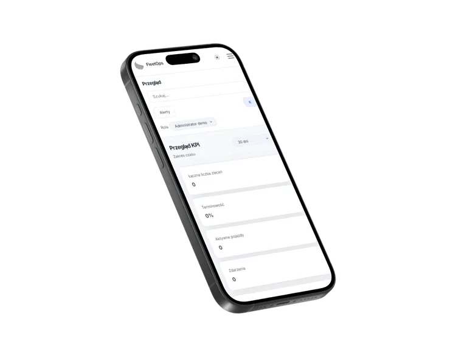
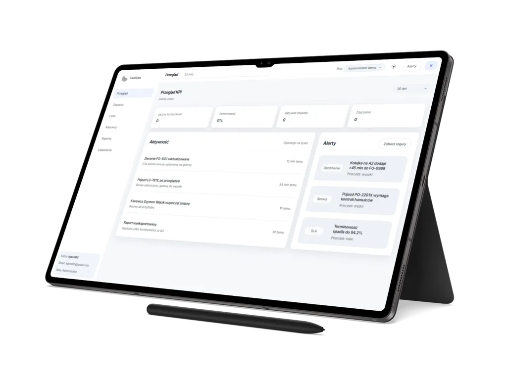

01
FleetOps
Statyczny projekt demonstracyjny typu SaaS dla operacji transportowych i flotowych, łączący publiczną stronę marketingową z hash-routowanym panelem demo opartym o lokalne dane.
Przegląd projektu
FleetOps pokazuje, jak może wyglądać front-endowy produkt SaaS dla operacji transportowych: od warstwy marketingowej po lokalny panel demo z rolami i danymi przykładowymi.
Projekt został przygotowany jako referencyjna realizacja portfolio KP_Code Digital Studio. Nie zawiera backendu, bazy danych, realnej autoryzacji ani produkcyjnych integracji z systemami zewnętrznymi.
Zakres obejmuje publiczne strony informacyjne, m.in. landing page, produkt, funkcje,
cennik, kontakt, bezpieczeństwo, karierę, dokumenty prawne oraz stronę
404. Część aplikacyjna działa pod trasami hash, takimi jak
#/app, #/app/orders, #/app/fleet,
#/app/drivers, #/app/reports i
#/app/settings.
Panel demo korzysta z lokalnych ról, danych seed i pamięci przeglądarki. Użytkownik może pracować na przykładowych zleceniach, pojazdach i kierowcach, filtrować oraz sortować listy, otwierać szczegóły rekordów, zmieniać ustawienia interfejsu i eksportować raporty do JSON.
SaaS
Transport
Dashboard
Demo
Zakres i akcenty
Case study koncentruje się na doświadczeniu produktu SaaS: strukturze marketingowej, panelu operacyjnym i jakości front-endu przygotowanego do statycznej publikacji.
02
Hash-routowany panel demo
03
Interakcje, dostępność i PWA
Technologie i standard
FleetOps został zbudowany jako statyczny front-end HTML, CSS i Vanilla JavaScript, z lokalnym stanem demo, hash routingiem oraz procesem buildowym dla publikacji.
Warstwa runtime korzysta z HTML, CSS, Vanilla JavaScript, Hash Routing API,
localStorage, sessionStorage, Service Worker API i Web App
Manifest. Tooling obejmuje Node.js, npm, sharp, PostCSS z cssnano, terser oraz testy
smoke w Playwright.
- lokalne operacje na zleceniach, flocie i kierowcach: dodawanie, edycja, usuwanie, filtrowanie, sortowanie, szczegóły i paginacja typu "załaduj więcej",
- ustawienia interfejsu obejmujące motyw jasny/ciemny, tryb kompaktowy, zakres dashboardu, preferencje list i reset danych demo,
- build produkcyjny z optymalizacją obrazów, minifikacją CSS/JS, konfiguracją statycznego hostingu, sitemapą, robotsem i cache przez Service Workera.


Dalszy krok
Zobacz demo FleetOps albo wróć do pełnego portfolio.
FleetOps pokazuje zakres pracy nad statycznym front-endem SaaS: od komunikacji marketingowej i panelu demo po role lokalne, dane przykładowe, dostępność, SEO, Service Workera i przygotowanie projektu do publikacji.